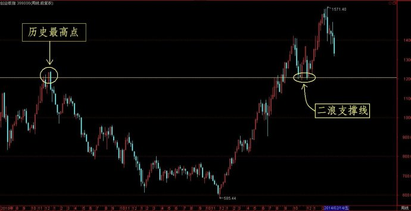

第411篇•创业板开始了中级调整
谷为陵
今天创业板继续大跌2.7%，恐慌情绪开始出现。创业板自今年2月25日的最高点1571开始下跌，至今跌幅已经达到了15%。一般而言，对于一个处于牛市的市场来说，自最高点回落15%,可被认为是正常调整；若回落幅度达到15%～25%，就可认为是中级调整；而下跌幅度达到25%～30%以上，就可认为进入了熊市。按照这个标准来衡量创业板，则创业板恰好进入了中级调整的上边界，而中级调整的下边界，或者说中级调整的低限，就是1200点。若跌破了1200点，则可确定创业板基本上就进入了熊市。
所以，1200点是创业板的生命线。这个1200点还有好几层含义：其一，它是创业板的曾经的历史新高；其二，它也是本轮牛市第二浪调整的支撑线，一旦跌破该支撑线，就证明三浪失败。如下图（创业板周线）所示：

有人会问：“假若创业板真的跌破了1200点，那么，创业板就永远没有牛市了吗？”不然，我在上面是用波浪理论进行的解释。假若这次创业板跌破1200点，用波浪理论可以有两种解释：一是三浪失败，牛市终结，要待熊市结束后，牛市才能够再来；二是即使跌破1200点，也不意味着牛市结束，可以解释为自585点至1571点这一波上涨属于牛市的第一大浪，而本次自1571点的下跌属于牛市的第二大浪调整。按照波浪理论的解释，只要本次调整不跌破585点，那么，牛市还在继续。波浪理论指出，牛市二浪调整的幅度往往很大，像极了熊市重新来临，但只要不破前期牛市的起点，则牛市还在继续。有人会说，这算什么解释，不是怎么说都有理嘛？没办法，这就是波浪理论的解释，因为数浪的方法有多种，就必然会得出多种可能的推论。但不管怎么说，我认为创业板的1200点还是不能破，一旦跌破，即便按照波浪理论认为属于二浪调整，但其杀伤力也将会是巨大的。
除了创业板指数具有了中级调整的特征外，创业板中的多数龙头股与强势股也跌幅加剧，明显地开始了中级调整。若以自最高点下跌超过25%作为中级调整的标准，那么，如下的大牛股都开始了中级调整：乐视网、华谊兄弟、光线传媒、华策影视、上海钢联、三诺生物、富瑞特装、碧水源、亿纬锂能、飞利信、机器人，等等。
另外，今年在创业板新上市的23只次新股，本来个个股都是牛股，但最近一段时间来，股价都出现了崩溃式地下跌，有的还跌破了上市的开盘价。这是很说明问题的。这些次新股本来是市场最活跃的品种，代表着市场的炒作人气，但随着它们的全面退潮，明确无误地揭示了多头正从创业板大规模撤退。
多头为什么要从创业板撤出？我在上篇博文中，已经谈了三个主要理由，但我也强调了其中最重要的理由，那就是4月份IPO重新开闸，被市场解读为重大利空。未来创业板到底是中级调整，还是转熊，我认为，这完全取决于IPO的力度。假若于IPO的节奏能够稳住，市场能够承受，那么，就会是中级调整；假若IPO的节奏太快，市场不能够承受，那么，就有可能转熊。
所以，不管怎么说，只有到了5～6月，待新股发行与上市月2个月后，我们才能够看出来创业板的最终选择。